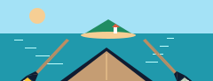

Module 3 · Distributed communication
Beat the Tide
Two players, one boat, and eighteen seconds to reach an island.
When I first thought about the button-mashing assignment, I kept coming back to one question. If we could both tap as fast as possible without paying attention to each other, what made it a team game? Rowing gave me a reason to care about the person holding the other board. Each of us would have one oar.
What I changed after playing
My part was shaping the rules and the view from the boat, then trying them on the two ESP32s. In an early round I couldn’t tell which side I was rowing or even whether I’d won. I asked for a view looking out toward the horizon. Now the brighter paddle is mine. It swings as soon as I press, but the island only gets closer when the crew earns a point. That distinction matters when my partner misses a beat. I can see that my button worked even though the boat stayed put.

I also wanted to know how much time we had left without looking away from the oar. The number in the corner counts down the race. The thin bar below the boat counts down just one stroke. At the finish, the result stays on both screens, with confetti for a win. Either player can start the rematch.
Two boards, one line apart
One question I had before playing was how we were supposed to press Start at the same time. We already had two people trying to coordinate their strokes. Asking them to synchronize two start buttons felt like adding a game before the game.
Here’s the only line that differs between the two uploaded sketches. Both boards listen for team 73. The highlighted value tells each one which job to do.
Left oar
const byte PLAYER = 0, TEAM = 73;Keeps time and awards points.
Right oar
const byte PLAYER = 1, TEAM = 73;Reports its tap and follows the race clock.
Each of us can press Ready whenever we like. The right board sends its ready flag over ESP-NOW. Once the left board has both flags and a live connection, it starts one three-second countdown and sends that state to the right. Both players see the countdown without either player having to call “go.”
How close is “together”?
A board’s clock starts when it powers up. If I plug mine in five seconds before yours, comparing our raw clock readings would make even a perfectly matched stroke look five seconds apart. What matters to the boat is where each tap lands within the current beat.
uint32_t elapsed = PLAYER ? state.elapsed + (now - rxClock) : now - start;Read that line from the two seats. On the left, now - start counts milliseconds since this beat began. The left board broadcasts that count about every 30 ms. On the right, state.elapsed is the count in the latest accepted update, and rxClock is when it arrived. If the update said 280 ms and I press 20 ms after receiving it, my board records 300 ms. This is an estimate. Radio travel time can shift a very close call.
There’s another wrinkle. If I tap early, see my partner tap later, and tap again, which of my strokes should count?
sweep(PLAYER, now);
localMoves++;
if (myTap < 0 && elapsed < BEAT_MS)
myTap = elapsed;Every press swings my paddle, so the controller feels responsive. Only the first press fills myTap, which starts at −1. The right board sends that saved offset with the round ID and beat number. On the left, a tap from another round or an earlier beat can’t fill the empty seat for this stroke.
Each beat accepts input for 1,400 ms. The host waits another 100 ms before clearing both taps. Say the right player taps at 1,390 ms and the message arrives at 1,420 ms on the host clock. That stroke can still pair with a left tap from the same beat. A new press at 1,420 ms is too late. Those extra milliseconds are for delivery. Twelve beats of 1.5 seconds make the 18-second round.
Why the fourth +1 earns nothing
During testing I kept winning. Shortening the round helped, but there was still a way to ignore my partner. We could tap at our own pace and keep collecting ordinary pairs. I wanted to give a new crew a few imperfect strokes while making rhythm matter by the finish. This is the decision the left board makes once it has both taps.
if (!scored && myTap >= 0 && theirTap >= 0) {
if (abs(myTap - theirTap) <= SYNC_MS) {
state.score += 2;
state.result = 2;
state.singles = 0;
} else if (state.singles < 3) {
state.score++;
state.singles++;
state.result = 1;
} else {
state.result = 3; // Blocked pair: feedback only, no point.
}
scored = true;
if (state.score >= TARGET)
state.phase = WON;
}Say I tap 300 milliseconds into the beat and my partner taps at 700. We both rowed, but we were 400 milliseconds apart, so we earn one space. Do that three times and we’re at three spaces. The fourth loose pair leaves us at three. That’s what state.result = 3 tells the display to explain. It’s a feedback code, not three points.
Now suppose our next taps land at 300 and 450. That 150-millisecond gap fits inside the 180-millisecond window. We move from three spaces to five and clear the streak. Skipping a beat won’t clear it. I also learned why scored belongs outside all three outcomes. The boards keep exchanging the same tap until the beat changes. Even a blocked pair needs to be marked as handled so the host makes exactly one decision per beat.
The finish line is 19 spaces. Twelve loose pairs can’t get us there. Seven synchronized pairs and five ordinary pairs can, if those ordinary pairs are spaced out. That arithmetic helped me distinguish a winnable game from a balanced one. I kept winning during testing, so I asked for a small increase in difficulty. I don’t have enough results from different crews to claim a 50% win rate. That gives us some room to miss each other and a reason to try the next stroke together.
Code and build instructions
The repository includes both board sketches, the display setup, and how to start a round. Open the project on GitHub. We started from Professor Tseng’s Button Mash Racer.
AI support
I used OpenAI’s Codex (GPT-6) to help implement and revise the firmware, and to organize this write-up and prepare the video. Two requests I made while testing were “the fourth one, if it's a plus one, it doesn't count” and “when I played it didnt see if we won or not.” Those led to the streak rule and the result screen. I tried the changes on the boards and asked to adjust the difficulty after I kept winning.